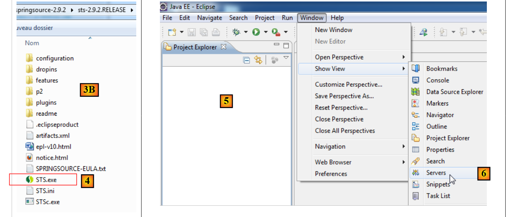
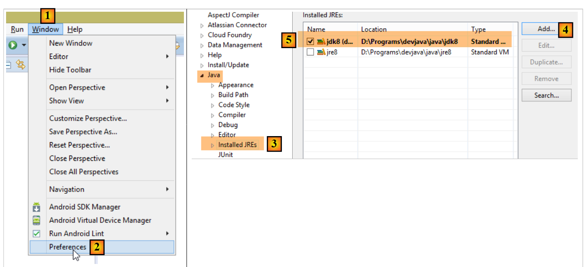
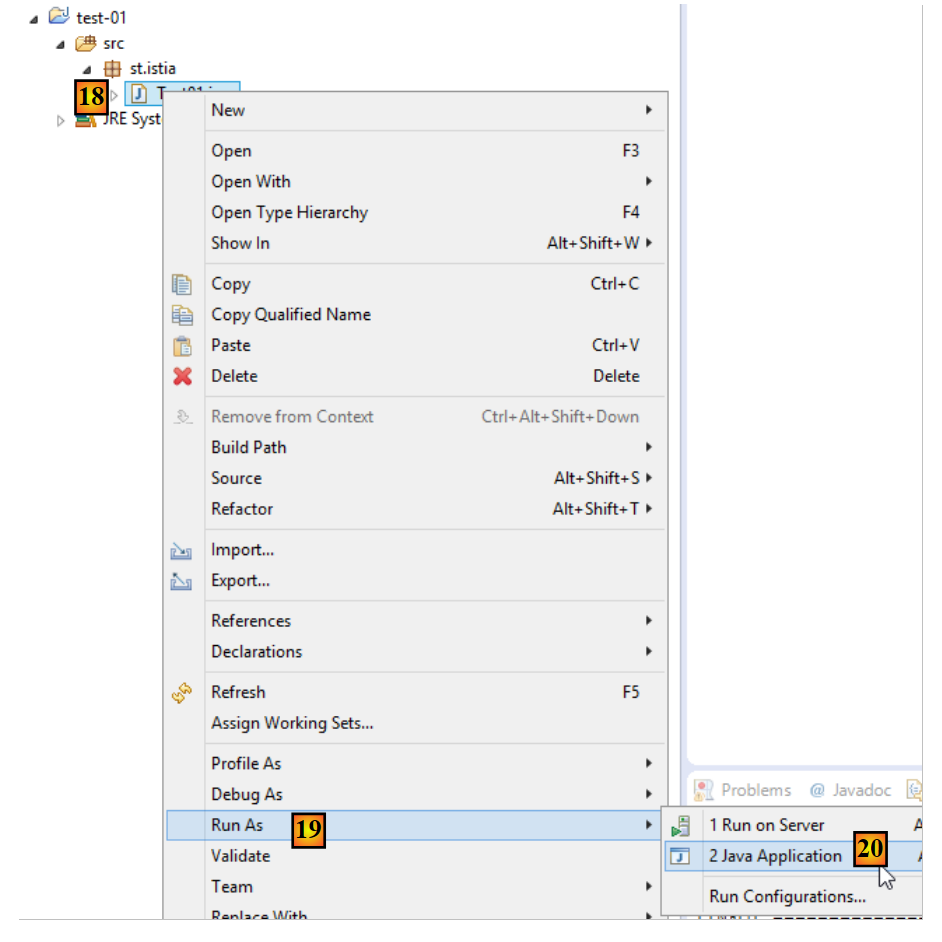
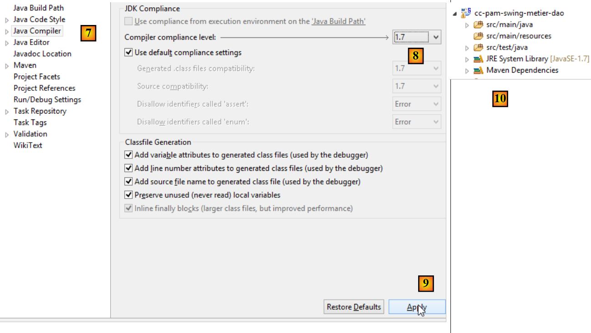
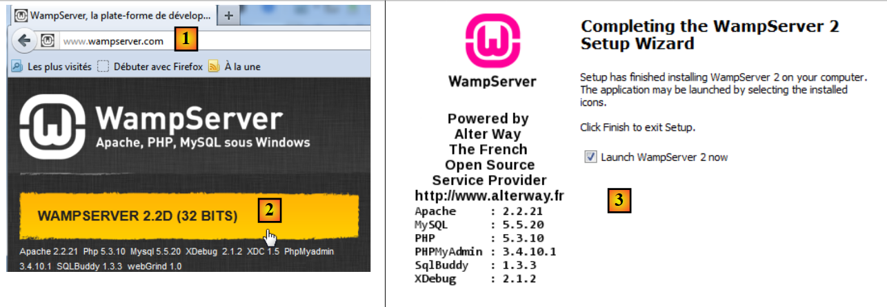

22. Anexos
A continuación se explica cómo instalar las herramientas utilizadas en este documento en equipos con Windows 7 u 8. Las capturas de pantalla suelen mostrar las versiones de 64 bits de SGBD y de las herramientas instaladas. El lector deberá adaptarse a su propio entorno.
22.1. Instalación de un JDK
Encontraremos en URL [http://www.oracle.com/technetwork/java/javase/downloads/index.html] (octubre de 2014), el JDK más reciente. A partir de ahora, llamaremos <jdk-install> a la carpeta de instalación del JDK.
 |
22.2. Instalación de Maven
Maven es una herramienta de gestión de dependencias de un proyecto Java y mucho más. Está disponible (octubre de 2014) en URL [http://maven.apache.org/download.cgi].
 |
Descarga y descomprime el archivo. Llamaremos <maven-install> a la carpeta de instalación de Maven.
 |
- En [1], el archivo [conf / settings.xml] configura Maven;
En él se encuentran las siguientes líneas:
<!-- localRepository
| The path to the local repository maven will use to store artifacts.
|
| Default: ${user.home}/.m2/repository
<localRepository>/path/to/local/repo</localRepository>
-->
El valor predeterminado de la línea 4 puede causar problemas en algunos programas que utilizan Maven, si, como en mi caso, su {user.home} tiene un espacio en su ruta (por ejemplo, [C:\Users\Serge Tahé]). Se designará (línea 7) otra carpeta para el repositorio local de Maven:
<!-- localRepository
| The path to the local repository maven will use to store artifacts.
|
| Default: ${user.home}/.m2/repository
<localRepository>/path/to/local/repo</localRepository>
-->
<localRepository>D:\Programs\devjava\maven\.m2\repository</localRepository>
En la línea 7, se evitará una ruta que contenga espacios.
22.3. Instalación de STS (Spring Tool Suite)
Vamos a instalar SpringSource Tool Suite [http://www.springsource.com/developer/sts] (octubre de 2014), un Eclipse preconfigurado con numerosos complementos relacionados con el marco Spring y también con una configuración de Maven preinstalada.
 |
- Acceda al sitio web de SpringSource Tool Suite (STS) [1], para descargar la versión actual de version de STS [2A] [2B],
 |
 |
- el archivo descargado es un instalador que crea el árbol de archivos [3A] [3B]. En [4], se ejecuta el ejecutable,
- en [5], la ventana de trabajo de IDE tras cerrar la ventana de bienvenida. En [6], se muestra la ventana de servidores de aplicaciones,
 |
- en [7], la ventana de servidores. Hay un servidor registrado. Se trata de un servidor VMware compatible con Tomcat.
Hay que indicar a STS la carpeta de instalación de Maven:
 |
- en [1-2], se configura STS;
- en [3-4], se añade una nueva instalación de Maven;
 |
- en [5], se designa la carpeta de instalación de Maven;
- en [6], se cierra el asistente;
- en [7], se establece la nueva instalación de Maven como la instalación predeterminada;
 |
- en [8-9], se comprueba el repositorio local de Maven, la carpeta donde se guardarán las dependencias que se descarguen y donde STS guardará los artefactos que se compilen;
También hay que elegir un JDK (Java Development Kit) para ejecutar tanto los proyectos Eclipse sin Maven como con Maven [1-5].
 |
Con [4], se pueden añadir JDK (Java Development Kit) o JRE (Java Runtime Environment). Este último sabe ejecutar archivos .class, pero no sabe compilar los .java para generarlos. El JDK puede hacer ambas cosas. Se elegirá un JDK porque algunas operaciones de Maven requieren un JDK.
Para crear un proyecto Eclipse, se procederá de la siguiente manera:
 |
- en [3], asigne un nombre al proyecto;
- en [4], seleccione una carpeta existente y vacía;
 |
- en [5], el proyecto creado;
- en [5-8], cree un paquete. Un paquete es una carpeta que contiene código Java. Dos clases pueden tener el mismo nombre si pertenecen a paquetes diferentes. En un proyecto, no puede haber dos paquetes con el mismo nombre. Por lo tanto, no se puede utilizar un nombre de paquete que ya exista en una de las dependencias del proyecto. Una empresa utilizará como nombre de paquete un nombre que especifique la empresa, el proyecto y las diferentes ramas del mismo;
 |
- en [9], asigne un nombre al paquete;
- en [10], el paquete creado;
 |
- en [11-13], se crea una clase en el paquete que se ha creado;
 |
- en [14], asigne un nombre a la clase (debe respetar la norma CamelCase: cada palabra del nombre debe comenzar con mayúscula seguida de minúsculas);
- en [15], compruebe el paquete;
- en [16], marque la casilla. Esto solicita que se genere el método estático [main]. Este método convierte una clase en ejecutable, es decir, la primera clase que se ejecutará en un proyecto;
- en [17], la clase así creada;
Escriba en el método [main] el siguiente código, que muestra un texto en la consola:
package st.istia;
public class Test01 {
public static void main(String[] args) {
System.out.println("test01");
}
}
 |
- en [18-20], ejecute la clase. A continuación, se ejecutará su método [main];
 |
- en [21-22], el resultado de la aplicación;
Si la vista [Console] no está presente, proceda de la siguiente manera [1-4]:
 |
Es posible que, al importar un proyecto de Eclipse, este presente errores. Esto puede deberse a una configuración incorrecta del proyecto. Para corregir el error (si lo hay), proceda de la siguiente manera:
 |
- en [1], modifique el [Build Path] del proyecto;
 |
- en [2], el proyecto está configurado para utilizar un JVM 1.5;
- en [3], elimine esta dependencia;
- en [4], añada una nueva dependencia;
 |
- en [5], se añade un JVM;
- en [6], se selecciona el JVM del elemento;
Una vez hecho esto, se valida todo y se pasa a la propiedad [Java compiler] del proyecto [7]:
 |
- en [8], se le pide al compilador que acepte todas las características del lenguaje Java hasta su version 1.7 (o 1.8) inclusive;
- en [9], se valida;
- en [10], el proyecto así reconfigurado ya no debería presentar errores;
Por otra parte, el proyecto importado puede utilizar una codificación UTF-8 de los caracteres. Proceda de la siguiente manera para establecer esta codificación en el proyecto importado:
 |
Por otra parte, puede resultar útil desactivar la corrección ortográfica en el proyecto para evitar que los comentarios en francés aparezcan subrayados como incorrectos. Siga los pasos [1-4] que se indican a continuación:
 |
22.4. Instalación de IDE Netbeans
Netbeans está disponible en URL [http://netbeans.org/downloads/].
 |
Se puede descargar aquí el version Java SE (Edición Estándar).
22.5. Instalación de la extensión de Chrome [Advanced Rest Client]
En este documento se utiliza el navegador Chrome de Google (http://www.google.fr/intl/fr/chrome/browser/). Se le añadirá la extensión [Advanced Rest Client]. Se puede proceder de la siguiente manera:
- acceder al sitio web de [Google Web store] (https://chrome.google.com/webstore) con el navegador Chrome;
- buscar la aplicación [Advanced Rest Client]:
 |
- la aplicación estará entonces disponible para su descarga:
 |
- para obtenerla, deberá crear una cuenta de Google. A continuación, [Google Web Store] solicita la confirmación de [1]:
 |
- en [2], la extensión añadida está disponible en option [Applications] [3]. Este option se muestra en cada nueva pestaña que crees (CTRL-T) en el navegador.
22.6. Gestión de jSON en Java
De forma trans a para el desarrollador, el marco [Spring MVC] utiliza la biblioteca jSON [Jackson]. Para ilustrar qué es el jSON (JavaScript Object Notation), presentamos aquí un programa que serializa objetos en jSON y hace lo contrario al deserializar las cadenas jSON generadas para recrear los objetos iniciales.
La biblioteca «Jackson» permite construir:
- la cadena jSON de un objeto: new ObjectMapper().writeValueAsString(object);
- un objeto a partir de una cadena jSON: new ObjectMapper().readValue(jsonString, Object.class).
Ambos métodos pueden lanzar un IOException. A continuación se muestra un ejemplo.
El proyecto anterior es un proyecto Maven con el siguiente archivo [pom.xml];
<?xml version="1.0" encoding="UTF-8"?>
<project xmlns="http://maven.apache.org/POM/4.0.0"
xmlns:xsi="http://www.w3.org/2001/XMLSchema-instance"
xsi:schemaLocation="http://maven.apache.org/POM/4.0.0 http://maven.apache.org/xsd/maven-4.0.0.xsd">
<modelVersion>4.0.0</modelVersion>
<groupId>istia.st.pam</groupId>
<artifactId>json</artifactId>
<version>1.0-SNAPSHOT</version>
<dependencies>
<dependency>
<groupId>com.fasterxml.jackson.core</groupId>
<artifactId>jackson-databind</artifactId>
<version>2.3.3</version>
</dependency>
</dependencies>
</project>
- líneas 12-16: la dependencia que incluye la biblioteca «Jackson»;
La clase [Personne] es la siguiente:
package istia.st.json;
public class Personne {
// data
private String nom;
private String prenom;
private int age;
// fabricantes
public Personne() {
}
public Personne(String nom, String prénom, int âge) {
this.nom = nom;
this.prenom = prénom;
this.age = âge;
}
// firma
public String toString() {
return String.format("Personne[%s, %s, %d]", nom, prenom, age);
}
// getters y setters
...
}
La clase [Main] es la siguiente:
package istia.st.json;
import com.fasterxml.jackson.databind.ObjectMapper;
import java.io.IOException;
import java.util.HashMap;
import java.util.Map;
public class Main {
// la herramienta de serialización / deserialización
static ObjectMapper mapper = new ObjectMapper();
public static void main(String[] args) throws IOException {
// creación de una persona
Personne paul = new Personne("Denis", "Paul", 40);
// mostrar jSON
String json = mapper.writeValueAsString(paul);
System.out.println("Json=" + json);
// instanciación Persona de Json
Personne p = mapper.readValue(json, Personne.class);
// visualización de personas
System.out.println("Personne=" + p);
// una mesa
Personne virginie = new Personne("Radot", "Virginie", 20);
Personne[] personnes = new Personne[]{paul, virginie};
// mostrar Json
json = mapper.writeValueAsString(personnes);
System.out.println("Json personnes=" + json);
// diccionario
Map<String, Personne> hpersonnes = new HashMap<String, Personne>();
hpersonnes.put("1", paul);
hpersonnes.put("2", virginie);
// mostrar Json
json = mapper.writeValueAsString(hpersonnes);
System.out.println("Json hpersonnes=" + json);
}
}
La ejecución de esta clase produce el siguiente resultado en pantalla:
Del ejemplo se destaca:
- el objeto [ObjectMapper] necesario para las transformaciones jSON / Object: línea 11;
- la transformación [Personne] --> jSON: línea 17;
- la transformación jSON --> [Personne]: línea 20;
- la excepción [IOException] lanzada por ambos métodos: línea 13.
22.7. Instalación de [WampServer]
[WampServer] es un conjunto de programas para desarrollar en PHP / MySQL / Apache en un equipo Windows. Lo utilizaremos únicamente para SGBD MySQL.
 |
- En la página web de [WampServer] [1], elija la versión adecuada de version [2],
- el ejecutable descargado es un instalador. Durante la instalación se solicita diversa información. Esta no afecta a MySQL. Por lo tanto, se puede ignorar. Al finalizar la instalación, aparece la ventana [3]. Se inicia [WampServer],
 |
- en [4], el icono de [WampServer] se instala en la barra de tareas, en la parte inferior derecha de la pantalla [4],
- al hacer clic en él, se muestra el menú [5]. Permite gestionar el servidor Apache y el SGBD MySQL. Para gestionar este último, se utiliza el option [PhpPmyAdmin],
- lo que nos lleva a la ventana que se muestra a continuación,

No daremos muchos detalles sobre el uso de [PhpMyAdmin]. En el apartado 6.4.2 mostramos cómo utilizarlo para crear una base de datos a partir de un script SQL.